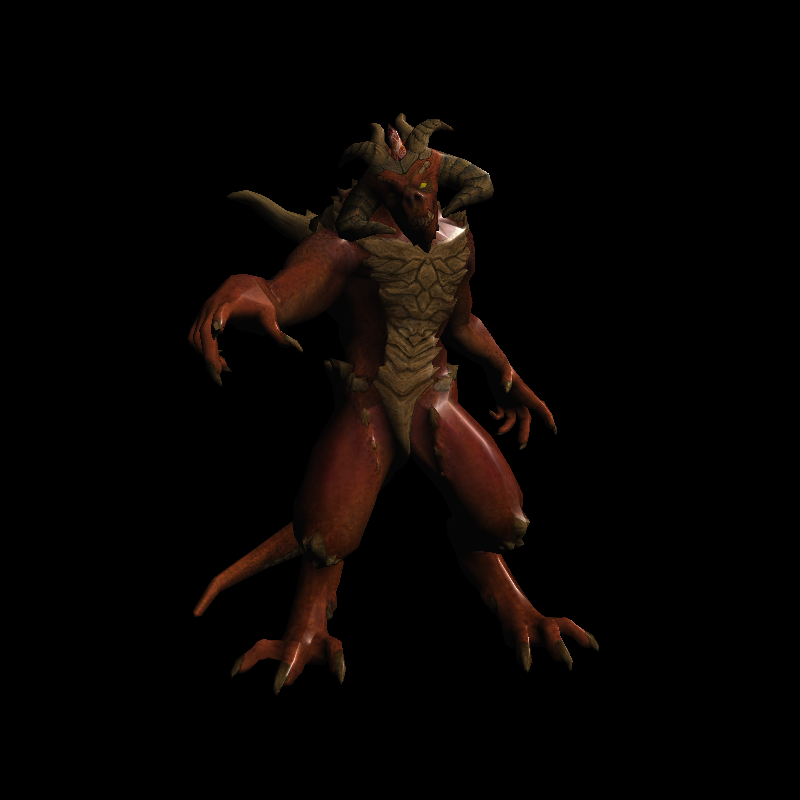
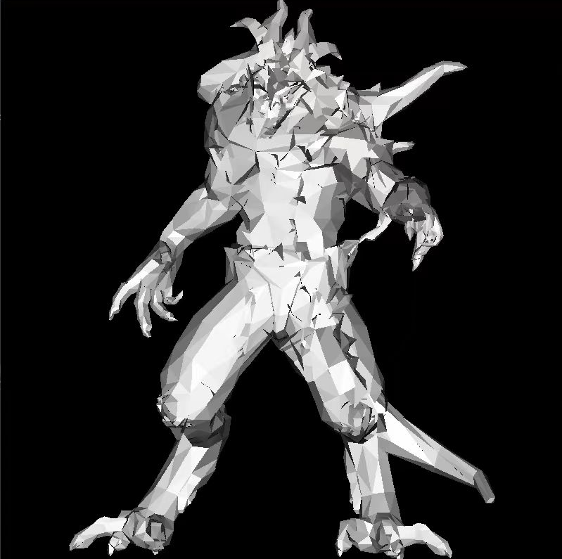
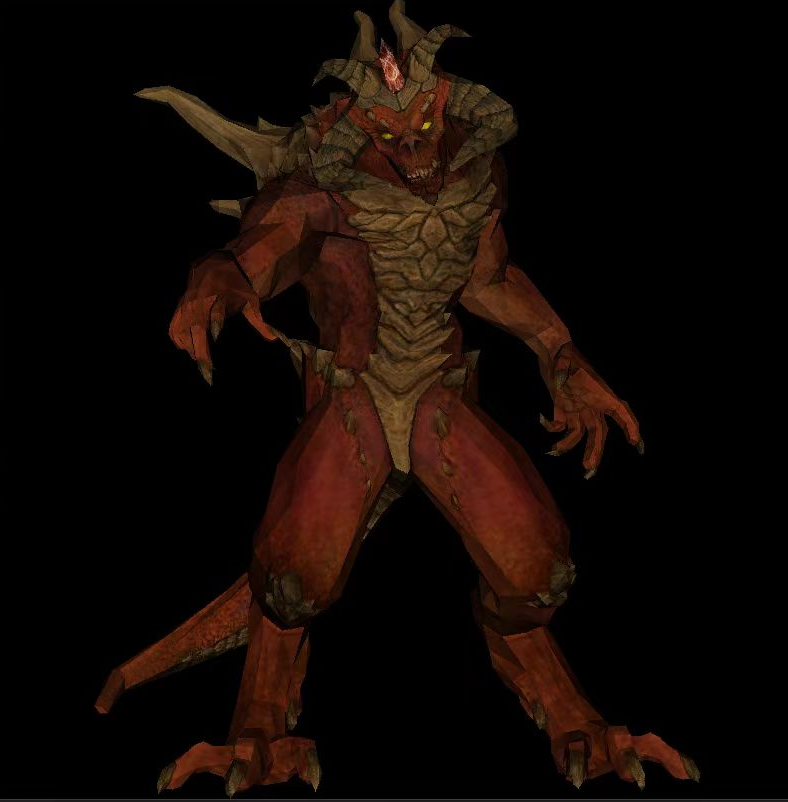
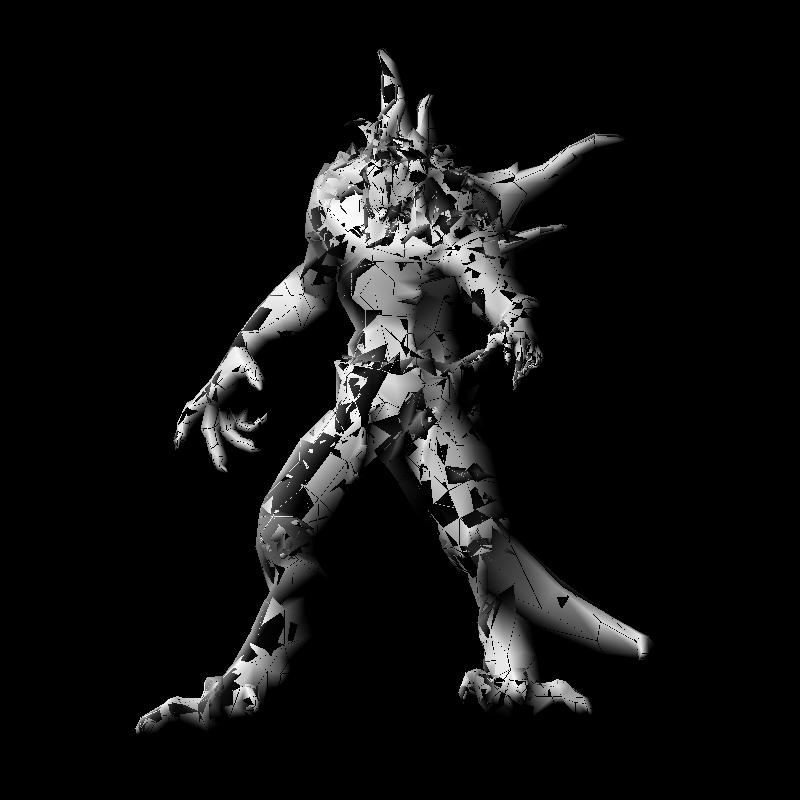
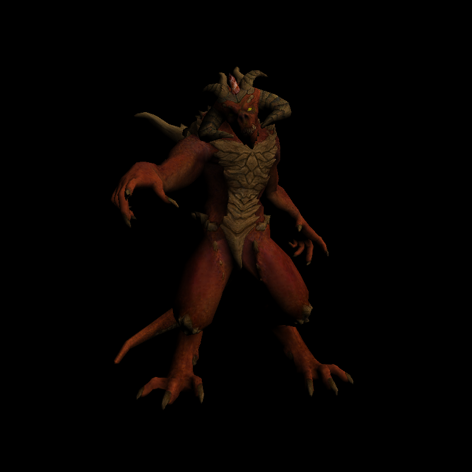
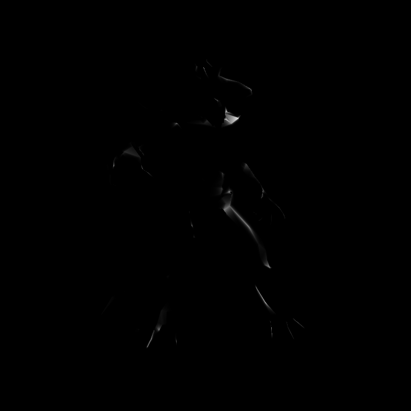

基于tinyrenderer的软渲染器实现
基于tinyrenderer的软渲染器实现
参考博客：
个人目前进度
Lesson 6: Shaders for the software renderer.
如下图可以看到高光还是有些许不自然。
一、环境配置
VS2022 + glm-0.9.9.8 + OpenCV 4.7.0
tinyrenderer教程中使用的是将FrameBuffer的结果输出到图片中，每次打开图片对于实时查看渲染结果还是有些繁琐，从知乎看到的博客分享有使用OpenGL进行可视化，但glDrawPixels函数在高版本OpenGL中已经弃用，即使下载使用博主提供的3.3版本的glfw+glad仍无法正常显示，最后选择配置OpenCV进行可视化，而tinyrenderer的矩阵库随着教程在不断修改，考虑实际开发更多使用第三方框架的矩阵库，这里选择使用了配置OpenGL时的glm库。
二、记录与踩坑
Lesson 1: Bresenham’s Line Drawing Algorithm
Lesson 2: Triangle rasterization and back face culling
Lesson 3: Hidden faces removal (z buffer)
线面绘制，模型顶点数据的读入以及z buffer的实现都比较简单，跟着教程一步步做就好，这里贴一下每帧将FrameBuffer中的数据拷贝到cv::Mat中并显示的代码。
1 | mat = Mat(SCR_HEIGHT, SCR_WIDTH, CV_8UC4, FrontBuffer->colorBuffer.data()).clone(); |
下图添加了该节末尾的纹理读取。
Lesson 4: Perspective projection
讲解了一些仿射变换的原理和推导。
Lesson 5: Moving the camera
矩阵行列存储差异：glm库中使用[ ]操作符来访问mat4的第几列，并使用二级[ ]来访问某一列的第几个元素。而教程中的矩阵元素赋值是先行后列，于是各个转换矩阵使用前需要进行转置。
1 | void viewport(const int x, const int y, const int w, const int h) { |
Lesson 6: Shaders for the software renderer
该节以OpenGL 2为例简单介绍了渲染管线的流程，以及顶点着色器，片元着色器需要实现的功能目标。

GouraudShader
这里原理与实现都不难，使用重心坐标对光照强度进行了插值计算，但教程在三角形光栅化里留了个坑XD。
教程代码：
1 | void triangle(Vec4f *pts, IShader &shader, TGAImage &image, TGAImage &zbuffer) { |
可以看到bboxmin与bboxmax为浮点向量，而在后续的像素点循环中同样使用浮点向量P，只在最终写入FrameBuffer时进行了隐式类型转换，导致三角形接边的像素丢失。
后续在循环中添加了强制类型转换，问题解决！
1 | for (P.x = int(bboxmin.x); P.x <= int(bboxmax.x); P.x++) { |
然后加上纹理
Specular mapping
再接着就是高光贴图的使用，这里介绍了Phong光照模型的计算原理与实现
反射向量的计算原理可以参考这篇博客
[]: https://zhuanlan.zhihu.com/p/152561125 “Shader实验室：reflect函数”
1 | virtual bool fragment(Vec3f bar, TGAColor &color) { |
教程中对高光分量的计算如下，使用高光贴图的r分量进行幂运算，而其他博客对Phong光照的计算常使用32次幂。
1 | float spec = pow(std::max(r.z, 0.0f), model->specular(uv)[0]); |
使用教程的公式并未能正常计算出高光，后使用漫反射光强度计算32次幂得到一个近似的结果。
后续还在继续调试修改。
Lesson 6bis: tangent space normal mapping
Lesson 7: Shadow mapping
Lesson 8: Ambient occlusion
Lesson 9: Real OpenGL (GLSL) application
未完待续。